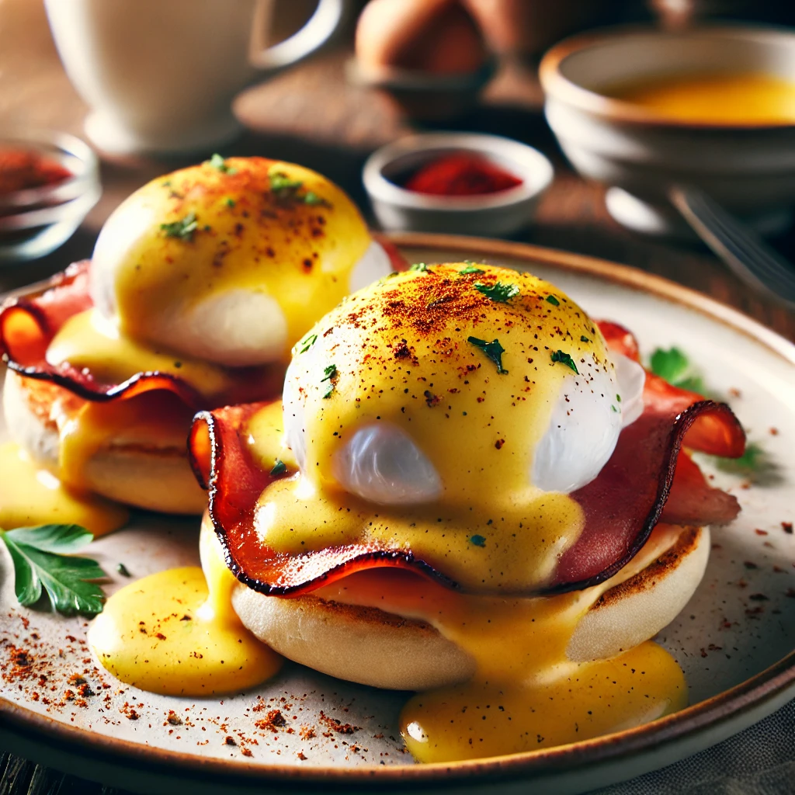

Eggs Benedict

A breakfast classic
A classic brunch dish featuring poached eggs and rich hollandaise sauce over a toasted English muffin with ham.
Ingredients
- 4 eggs
- 2 English muffins, halved and toasted
- 4 slices of British back bacon or ham
- 1 tbsp white vinegar
- 115g unsalted butter, melted
- 3 egg yolks
- 1 tbsp lemon juice
- ½ tsp Dijon mustard
- Salt and cayenne pepper to taste
- Chopped chives (for garnish)
Steps
- In a heatproof bowl, whisk egg yolks, lemon juice, Dijon mustard, and a pinch of salt.
- Place the bowl over a pot of simmering water (double boiler) and whisk while slowly drizzling in melted butter until thickened. Remove from heat and add cayenne pepper.
- Heat a frying pan over medium heat and cook the bacon until lightly browned, then set aside.
- Bring a pot of water to a gentle simmer, add vinegar, and swirl the water. Carefully crack an egg into the water and poach for 3 minutes. Repeat for all eggs.
- Place toasted English muffins on plates, top each with a slice of bacon, then a poached egg, and drizzle with hollandaise sauce. Garnish with chives and serve immediately.
Home